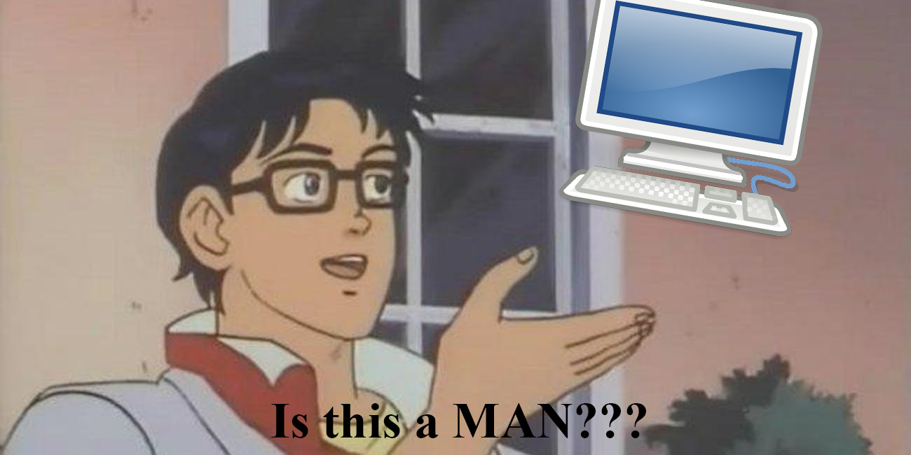

1950 - Alan Turing test
1966 - ELIZA
1970 - SHRDLU (ETAOIN SHRDLU)
Chatterbots
1980s - revolution! Machine learning algorithms!
Extracting affective states and subjective information.
Example: I say that I really like pasta!
Example: customer chat services
Example: siri, google assistant, CORTANA
Example: Google translator, yandex-translator, etc.
Example: PERSON works for ORGANIZATION
| syntactic analysis | semantic analysis |
|---|---|
| grammatical rules | meaning and interpretation |
Breaking up a text into smaller pieces
Reducing inflected forms of a word into a single form (lemma)
Examples:
better → good
go, gone, going → go
Reducing the inflected words to their root form
“In our last meeting" - noun
"We are meeting again tomorrow” - verb
Examples of groups: persons, locations, organizations, medical codes, etc.
Is Washington a man or a state?
"South Africa" > "South" + "Africa"